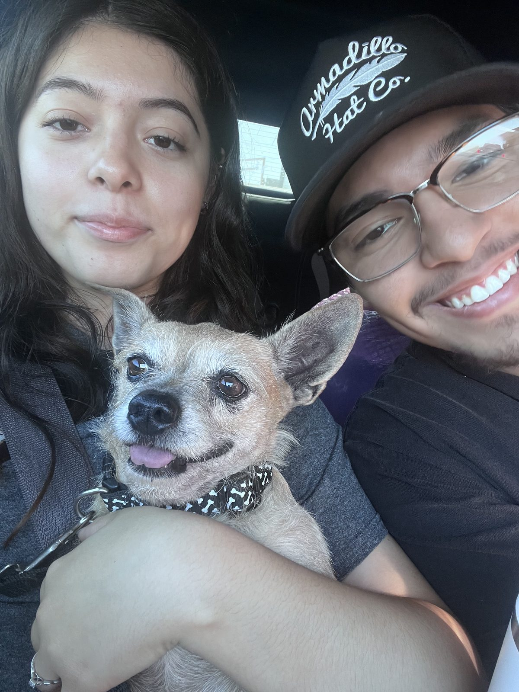
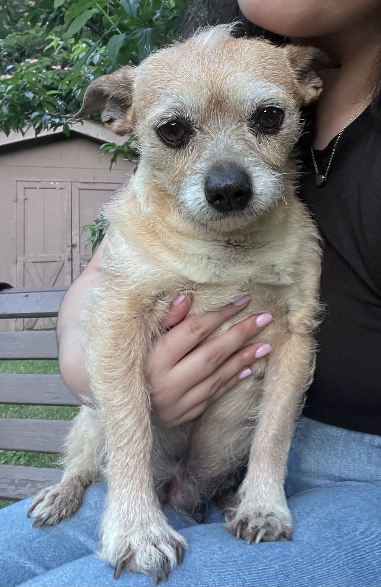
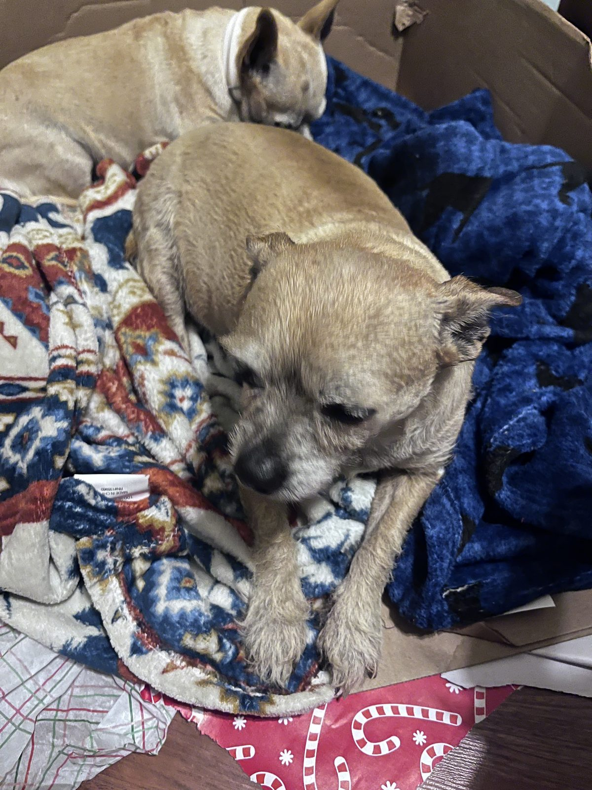
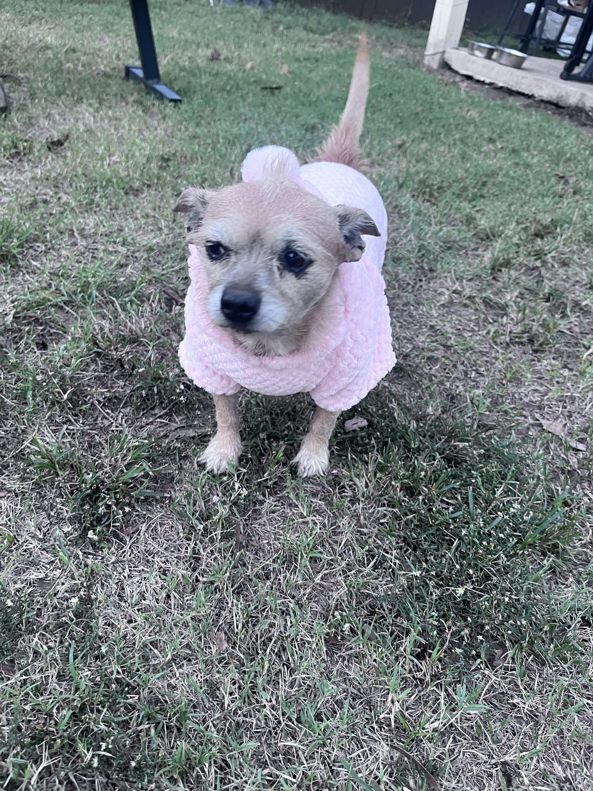
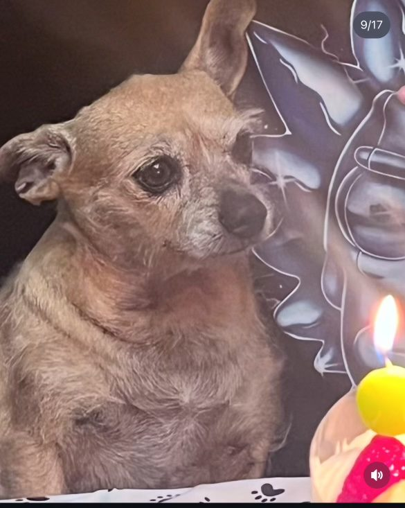
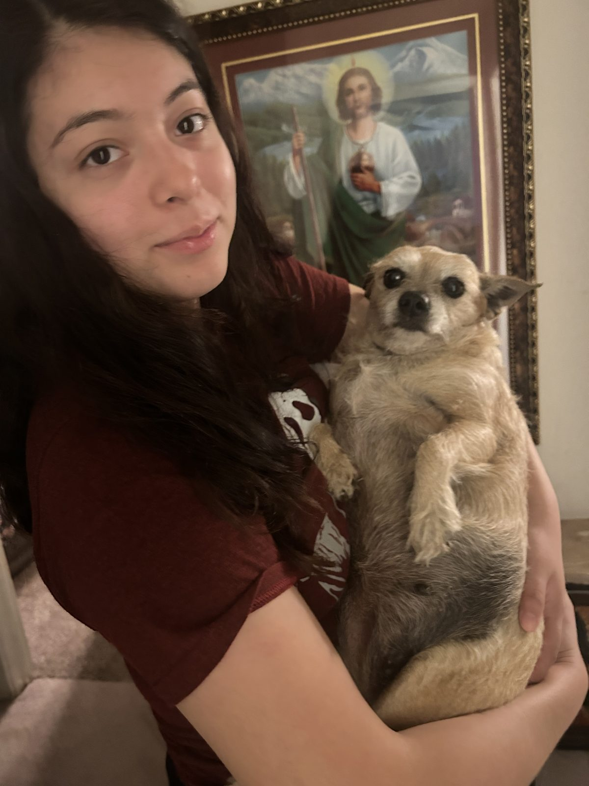

Retail Experience
Degrees from UNT
Companies Led
Daughter (Vela)
Chicken Consumed
About
Toncha Tapia is a self-made icon whose name is synonymous with hustle, loyalty, and an unshakable love of chicken — boiled or pan-seared above all else. Widely believed to be a Terrier by breed and a legend by nature, Toncha built a life defined by hard work, tough love, and showing up for the people — and dogs — she loved most.
Whether she was climbing the retail ranks, organizing her fellow dogs for fair treatment, or holding court at the casino, Toncha did everything with the same relentless personality: all in, no apologies. She was fiercely devoted to her family, suspicious of anyone new (looking at you, Diego), and utterly uninterested in cats. She leaves behind a legacy that, frankly, most humans could only dream of.
Career
Twelve years in retail. Zero days phoning it in.
Target
Ran the floor like she ran everything else — with total authority and an eye for who was slacking.
TJ Maxx · 12 Years
Started on the floor and worked her way up over more than a decade, earning every promotion the old-fashioned way. The longest tenure of her career, and the one she was proudest of.
Ross
Brought the same work ethic across the aisle, no matter the store.
Five Below
Proof that Toncha's talents translated across every price point.
Education
High School Diploma
Where it all started.
Associate's Degree
Building the foundation.
Bachelor's & Master's Degrees, Class of 2021
Go Mean Green. Two degrees, one very determined dog.
Activism
Toncha didn't just clock in and out — she organized. As a leading voice in the fight for fair dog wages, she rallied dogs and people alike, arguing that dogs deserve to be treated — and paid — like the people they work alongside every day. She mentored young pups on the side, passing down everything she'd learned about hard work, dignity, and knowing your worth.
Led demonstrations and rallied support across species for fair compensation and recognition of dogs as people, not property.
Informally mentored younger dogs on work ethic, street smarts, and how to hold your own.
Her Circle
Her Sister, Not Her Owner
They weren't dog and owner — they were sisters. No one came before Diana, and no one ever will. Every decision Toncha made, every fight she picked, every soft moment she allowed herself — it all came back to Diana. Toncha also loved to borrow money from her and rarely paid it back, but Diana was always chill about it — because she loves her, and Toncha truly knew it. Toncha gave Diana light, and gave the rest of us so much more than we ever gave her.
Daughter
Toncha loved Vela fiercely and led with tough love. They fought like family — because they were. Also partners in crime for late-night outings.
Earned Trust, Eventually
Came in later in life. Toncha wasn't sure about him at first — she once spit out chicken he offered her, convinced it was poisoned. It took about a year and a custom-built house before she came around. Now she loves him almost as much as Diana. He still owes her some money, for the record.
Ride or Die
Diana isn't always Carmen's biggest fan, but Toncha and Carmen? Inseparable. A true friendship that needed no one else's approval.
Respected & Loved
Toncha loved and respected them deeply for taking care of her — a debt of gratitude she never forgot. Especially on grill days: they always slipped the dogs a piece or two, and Toncha felt she'd earned every bite.
Diana's Older Sister
The oldest of the family and one of Toncha's steady caretakers alongside Diana. Also mom to Toncha's beloved nieces, Molly and Maya.
Maribel's Husband
Took Toncha in for a full week once and passed the test. Extended family, fully approved.
Sworn Enemy
No further comment necessary. She hated them. All of them. On principle.
Gallery
Spin the cube. Relive the moments.






Drag to rotate
Play
Move Toncha. Catch the chicken. Dodge the cats.
Use ← → or drag on mobile. Chicken 🍗 = points. Cats 🐈 = a life lost.
In Loving Memory
A life well lived — full of chicken, hard work, tough love, and two people she adored more than anything. She and Diana weren't dog and owner, they were sisters — and Toncha gave her light, the way she gave all of us so much more than we ever gave her. Her mark on the world runs deeper than paws could ever leave behind. She'll be waiting, as always, for Diana, Diego, and everyone else she loved, whenever they arrive.
With all our love — Diana & Diego